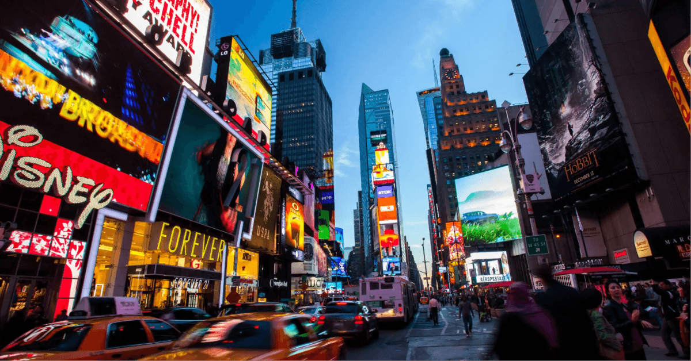

Os principais
Times Square
Localizada em Nova York. Com fluxo de pessoas constatemente, grandes marcas presentes e possuindos diversos filmes gravados neste local, ele é icônico para os Estados Unidos sendo o mais visitado quando se vai para esta cidade.O local possui, desde 2015, uma mega tela digital de alta definição, com 24 milhões de lâmpadas LED, em que é possível visualizar perfeitamente imagens em qualquer condição de luz, quase do tamanho de um campo de futebol americano.
Walt Disney
Todo o enorme complexo da Disney World que fica em Orlando, na Flórida, é o que tem de mais fiel à nossa imaginação: parques e mais parques onde o mundo encantado é tão bem produzido que você esquece completamente do mundo lá fora.Reúne também um enorme complexo de compras, com diversos outlets, shoppings, hipermercados e lojas especializadas, sendo um dos principais pontos turísticos que os brasileiros visitam.

Casa Branca
Casa Branca é o símbolo máximo da política americana e transmite bem a ideia do que é turistar na capital dos Estados Unidos. A casa do presidente, em Washington DC, fica bem no meio do caminho de quem vive ali e também de muitos turistas. A Casa Branca não pode ser visitada, mas é impossível não gastar uns minutos olhando para lá com alguma curiosidade e admiração.